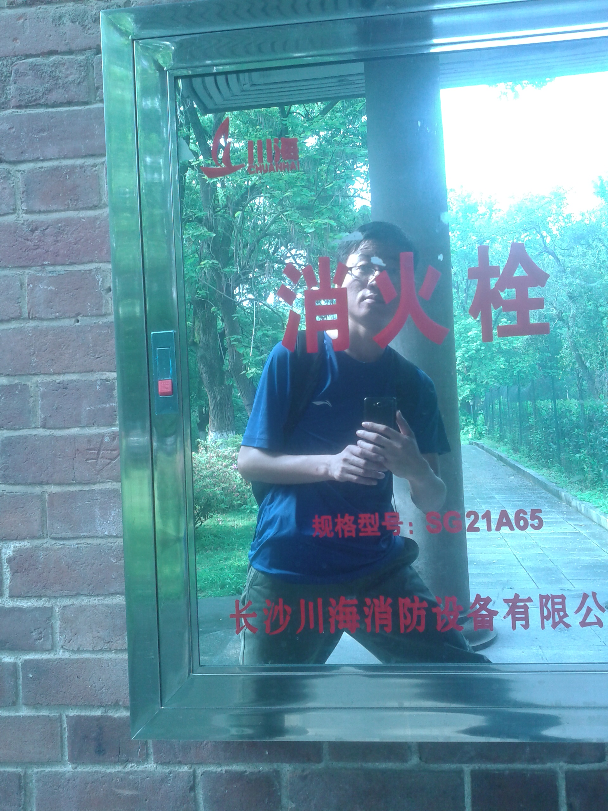

长沙两日游
一直想出去走走，五一假期终于出发了。
出发
4月40日，周四，下班后在公司查了会攻略，然后拿起包出发。
先去家乐缘吃了个饭，再去购书中心晃到9点左右。坐地铁到广州火车站。
广场上翻过栏杆到售票厅，取了车票，176元的卧铺票，正好睡一夜。
5月1日早上8点到的长沙，人都走光了，我却在那睡。。。然后被列车员叫起。。
先去家乐缘吃了个饭，再去购书中心晃到9点左右。坐地铁到广州火车站。
广场上翻过栏杆到售票厅，取了车票，176元的卧铺票，正好睡一夜。
5月1日早上8点到的长沙，人都走光了，我却在那睡。。。然后被列车员叫起。。
岳麓山
火车站坐立珊专线到湖南大学，走去岳麓书院外面看了下，门票50，就没进去。
从院墙上的窗户里，就能看到那副“惟楚有才于斯为盛”的对联，看到这个也就可以了。
从南门上去岳麓山，我一直走的大路，先逛了下蔡锷墓，然后进到麓山寺那里，
看到有条往下的小路，是通往爱晚亭的，这才意识到自己一开始是走错了，不该爬那大路的
就先往下逛过了爱晚亭、山洞司令部等以后，从另一边再往上走，一路不停的上台阶。沿途很多的烈士墓。
最后终于上到一个大路，往左边再走到黄兴墓，然后下来路边买了把折扇。就从大路再走回南门下山了。
下来后吃了个炸香蕉，很好吃额，然后逛了下湖南大学，路上吃了个驴打滚，还捡到了一毛钱，然后再坐上立珊专线。
往下一站：橘子洲头。
从院墙上的窗户里，就能看到那副“惟楚有才于斯为盛”的对联，看到这个也就可以了。
从南门上去岳麓山，我一直走的大路，先逛了下蔡锷墓，然后进到麓山寺那里，
看到有条往下的小路，是通往爱晚亭的，这才意识到自己一开始是走错了，不该爬那大路的
就先往下逛过了爱晚亭、山洞司令部等以后，从另一边再往上走，一路不停的上台阶。沿途很多的烈士墓。
最后终于上到一个大路，往左边再走到黄兴墓，然后下来路边买了把折扇。就从大路再走回南门下山了。
下来后吃了个炸香蕉，很好吃额，然后逛了下湖南大学，路上吃了个驴打滚，还捡到了一毛钱，然后再坐上立珊专线。
往下一站：橘子洲头。
橘子洲头
公交坐到太平街，再转地铁到橘子洲，出来后一看就是要下大雨的样子。
赶紧再回到地铁里，很快大雨就下来了，游客很多，都挤在地铁这下面。
过一会雨停了，出去逛，雨后清爽的感觉很不错，太阳慢慢又灿烂起来了。
走着去看青年毛泽东雕像，，走啊走，走的我腿好累呀，走了很久看到个路牌，
上面写的已经是走了2300米，还要1000米能到雕像，我了个去，竟然这么远。
再走几十步，我擦，，暴雨从天而降，直接傻眼了，又没有伞，乱跑到旁边树下避雨，
还是被淋成了狗，上面全湿透了，裤子还好点，，几分钟后雨停了，太阳又出来了。。
幸好我穿的是速干T恤，继续走，慢慢也就干了，经此一淋，感觉来这倒有意思了。
终于走到了雕像，确实很大，好多人在拍照，我也拍了几张。
橘子洲我觉得没啥好玩的，就一个大公园嘛，走的真的太累了。
赶紧再回到地铁里，很快大雨就下来了，游客很多，都挤在地铁这下面。
过一会雨停了，出去逛，雨后清爽的感觉很不错，太阳慢慢又灿烂起来了。
走着去看青年毛泽东雕像，，走啊走，走的我腿好累呀，走了很久看到个路牌，
上面写的已经是走了2300米，还要1000米能到雕像，我了个去，竟然这么远。
再走几十步，我擦，，暴雨从天而降，直接傻眼了，又没有伞，乱跑到旁边树下避雨，
还是被淋成了狗，上面全湿透了，裤子还好点，，几分钟后雨停了，太阳又出来了。。
幸好我穿的是速干T恤，继续走，慢慢也就干了，经此一淋，感觉来这倒有意思了。
终于走到了雕像，确实很大，好多人在拍照，我也拍了几张。
橘子洲我觉得没啥好玩的，就一个大公园嘛，走的真的太累了。
住宿
从橘子洲头坐地铁到个溁湾镇。出来打车到湖南师大附中附近。
从个小巷子进去，看到有两家旅馆，先吃了两碗米粉，然后上去旁边一家，老板不在。
住了另一家，100元，老板都直说了，因为是五一假期所以才100，平时是50。
NND这个条件这么差，早知道还不如订7天了。
睡到第二天8点多，起来把明天(5月3日)的回广州的车票改签到了今天的。
然后查了下交通，出门，今天穿的短袖衬衫，天气又非常的好，感觉自己好帅呀。
路过湖师大附中，看到这学校在校庆，好像是110了，蛮厉害的中学。
从个小巷子进去，看到有两家旅馆，先吃了两碗米粉，然后上去旁边一家，老板不在。
住了另一家，100元，老板都直说了，因为是五一假期所以才100，平时是50。
NND这个条件这么差，早知道还不如订7天了。
睡到第二天8点多，起来把明天(5月3日)的回广州的车票改签到了今天的。
然后查了下交通，出门，今天穿的短袖衬衫，天气又非常的好，感觉自己好帅呀。
路过湖师大附中，看到这学校在校庆，好像是110了，蛮厉害的中学。
天心阁
坐个公交，去天心阁转了下，外面公园是免门票的，但里面个小景区还要门票，35。
果断不进去了，在公园后面条小路走过去，有个草坪上很多椅子，有卖吃喝的，好个惬意的地方。
湖南第一师范
这个地方倒是让我觉得很好!
建筑嘛，虽然小有特别，但也就那样。
主要是这里的展览，现在想来和黄埔军校有点像。
青年毛泽东，在这里求学、结婚，吸收进步思想，走上革命道路，
游学九百里、猴子石设伏、、等等，原来毛主席的青春，这么精彩。
一圈游览下来，很励志。这个地方很值得一游。
建筑嘛，虽然小有特别，但也就那样。
主要是这里的展览，现在想来和黄埔军校有点像。
青年毛泽东，在这里求学、结婚，吸收进步思想，走上革命道路，
游学九百里、猴子石设伏、、等等，原来毛主席的青春，这么精彩。
一圈游览下来，很励志。这个地方很值得一游。
湖南图书城
从第一师范出来后坐了个公交本来想去贾谊故居的
结果坐错了被拉到个万达广场，在那边吃了个兰州拉面
吃完想逛下长沙的书店，百度查到了定王台书市，貌似不远，就选择走路去
结果，走啊走，走啊走，疯狂的走了一个多小时，问了四五个人，才走到了
进去一看，大失所望，就一个图书市场，卖的全是些教辅考试类的，没意思
好在出来后，旁边看到湖南图书城，其实就是新华书店，这个倒是蛮大的
在里面逛了下，看到了《深入剖析tomcat》，嘿嘿，这书一直想买，一直找不见
竟然在这里遇到了，果断买了，原价，花了我59块呀
结果坐错了被拉到个万达广场，在那边吃了个兰州拉面
吃完想逛下长沙的书店，百度查到了定王台书市，貌似不远，就选择走路去
结果，走啊走，走啊走，疯狂的走了一个多小时，问了四五个人，才走到了
进去一看，大失所望，就一个图书市场，卖的全是些教辅考试类的，没意思
好在出来后，旁边看到湖南图书城，其实就是新华书店，这个倒是蛮大的
在里面逛了下，看到了《深入剖析tomcat》，嘿嘿，这书一直想买，一直找不见
竟然在这里遇到了，果断买了，原价，花了我59块呀
返程
图书城出来后坐了个公交车去火车站
没想到遇到了堵车，有一段路走的很慢很慢
本来预计的时间是足够的，结果用了很久才到火车站
快速的跑到售票厅里取了票，再快速的一路跑到候车室里
已经在检票了，，恰好赶得上
坐的个56块钱的硬座车，条件不好，好在有座位
早上5点左右到的广州，地铁还没开，等到快6点坐地铁回家
没想到遇到了堵车，有一段路走的很慢很慢
本来预计的时间是足够的，结果用了很久才到火车站
快速的跑到售票厅里取了票，再快速的一路跑到候车室里
已经在检票了，，恰好赶得上
坐的个56块钱的硬座车，条件不好，好在有座位
早上5点左右到的广州，地铁还没开，等到快6点坐地铁回家
后记
和大多数旅途一样，玩过了，想一下觉得没啥好玩的，可是一记录，又发现经历了挺多的事情，总比在家里宅两天有意思多了。
所以有时间，还是应该出去玩。于2015年5月。
